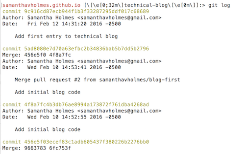

Week 1
Version Control, Git, and GitHub
February 12, 2016
What are the benefits of version control? I've learned a lot of new information in my first week at Dev Bootcamp. Version control is an extremely important tool to use when coding. It is a system that records changes to a file over time so that you can keep track of all revisions made. It allows you to compare changes over time, see who made a revision (and why), and revert back to an earlier version before a specific change was made (perhaps due to an issue caused by the change). Basically, version control allows you to easily get back to a working version of your file if something goes wrong.
How does git help you keep track of changes? Git is, arguably, the best version control system around. It allows programmers to make changes to files through a system called "branching" without making changes to the "master branch", which should always be fully-functional code. Git allows you to save different versions of your code every time a change is made. You can look at your "git log" to see all the changes that were "committed" (saved) and revert back to any earlier version.
Here is an example of a git log:

Why use GitHub to store your code? GitHub is the largest online host where you can save "git repositories" (files equipped with git version control) as well as "clone" others' repositories in order to make changes and contribute to the same files. GitHub should be used to store your code because it keeps your code in one place, safe from being lost if your computer breaks or is stolen, for example. It also allows for collaborations- once your code is on GitHub, others can work on your code with you and help debug issues you are having.